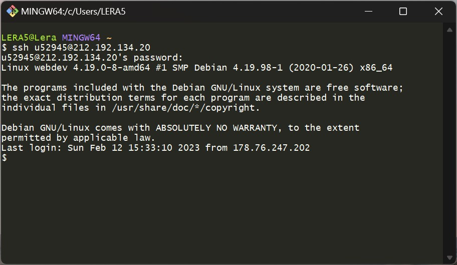
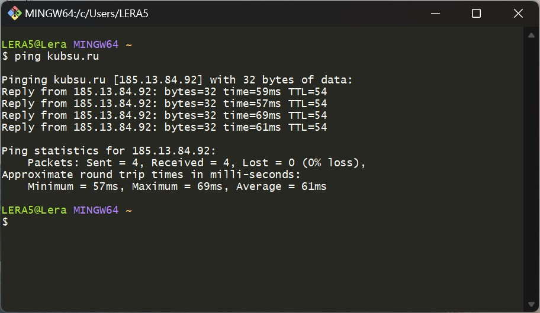
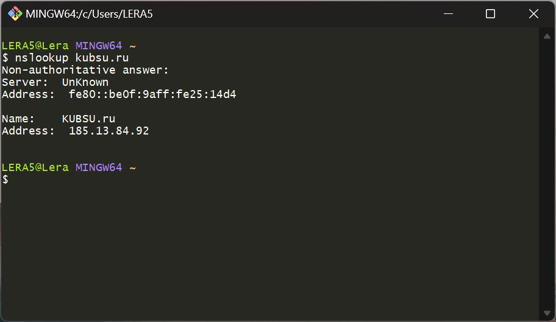
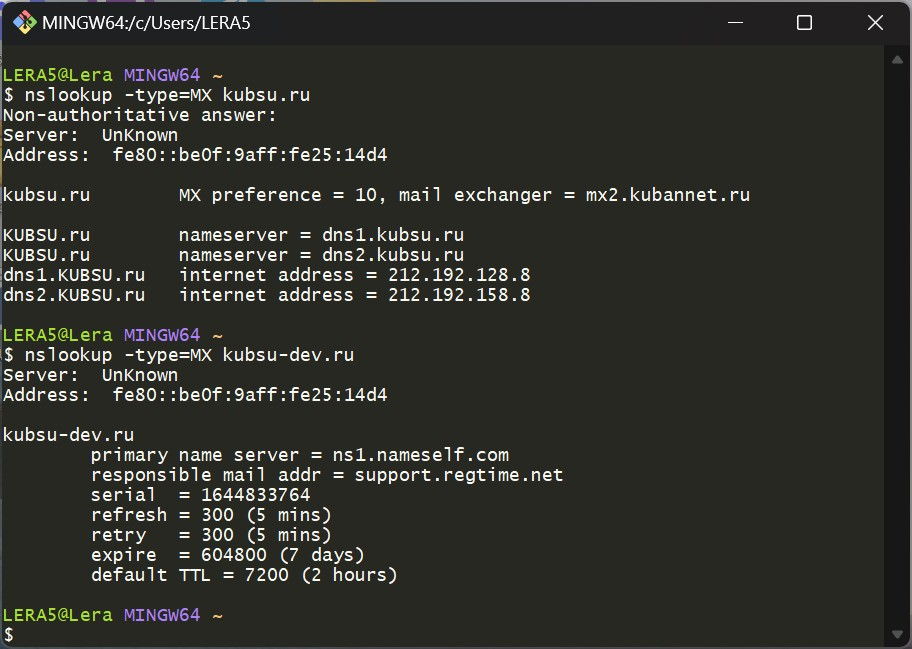
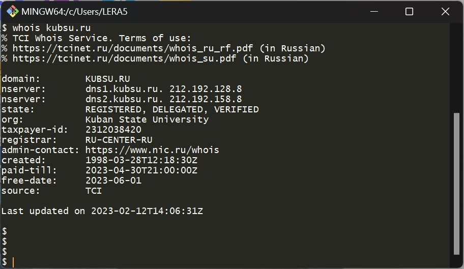
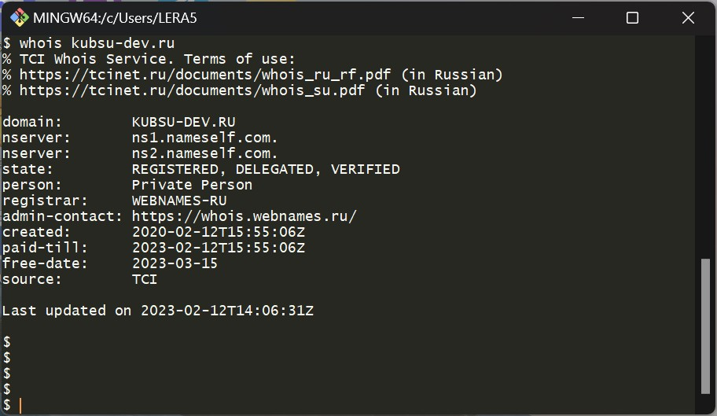
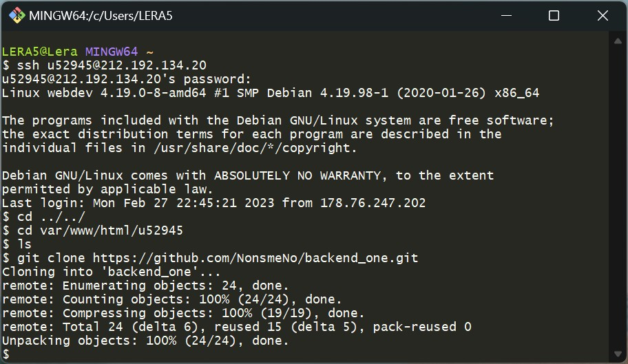

ЗАДАНИЕ 1
ssh u52945@212.192.134.20Установка соединения учебным сервером по протоколу ssh, ввод логина и пароля доступа к учебному серверу 
ЗАДАНИЕ 2
ping kubsu.ruКоманда ping используется для проверки соединения с сервером, также позволяет узнать имя и IP-адрес веб-сервера 
ЗАДАНИЕ 3
nslookup kubsu.runslookup -type=MX kubsu-dev.ru
nslookup - команда для запросов в доменной системе имен (DNS) с целью получения информации (доменного имени, IP-адреса или другой информации из записей DNS)
A = адресная запись
MX = почтовый шлюз + приоритет, благодаря MX записи отправляющая сторона понимает, на какой сервер нужно отправлять почту для данного домена.
 
ЗАДАНИЕ 4
команда WHOIS используется для исследования доменов Интернета, с помощью нее можно узнать имя владельца домена, адрес электронной почты, контактный телефон, дату регистрации и тд.whois kubsu.ru
C помощью whois узнаем дату регистрации домена kubsu.ru и kubsu-dev.ru  
ЗАДАНИЕ 5
git clone https://github.com/NonsmeNo/backend_one.gitКоманда git clone позволяет скопировать существующий репозиторий Git 